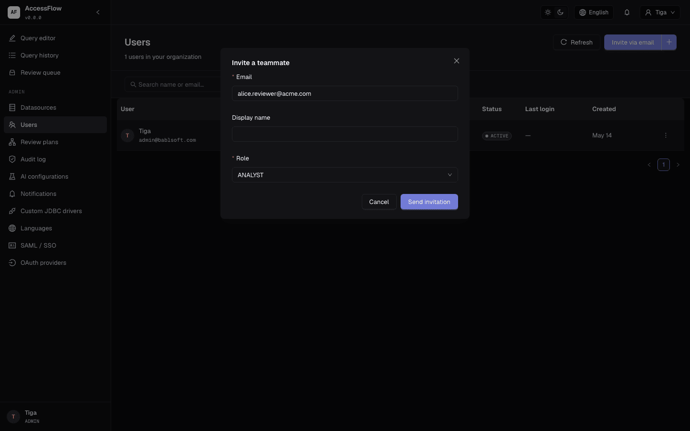
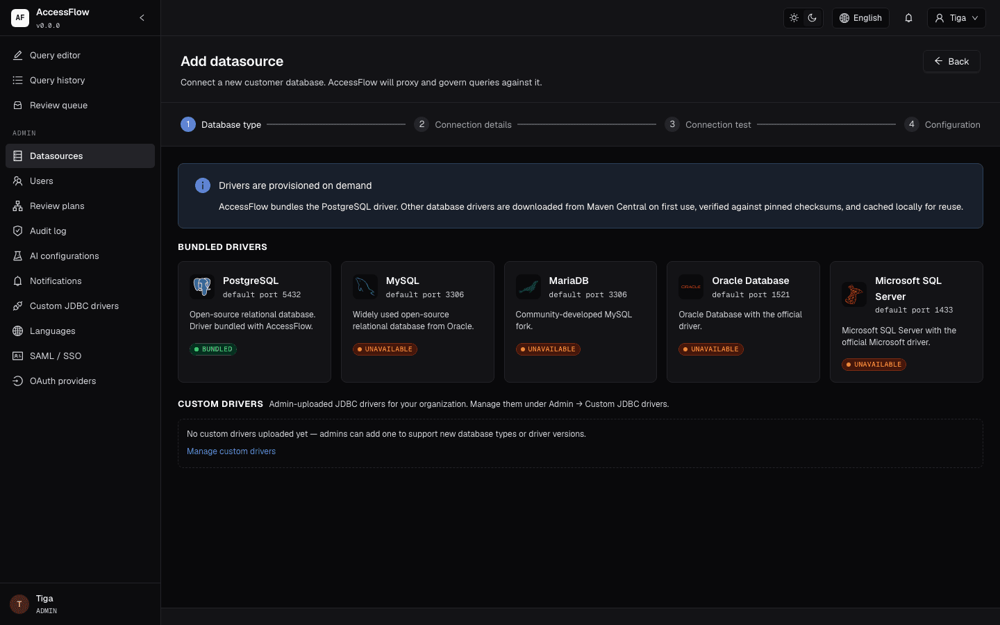
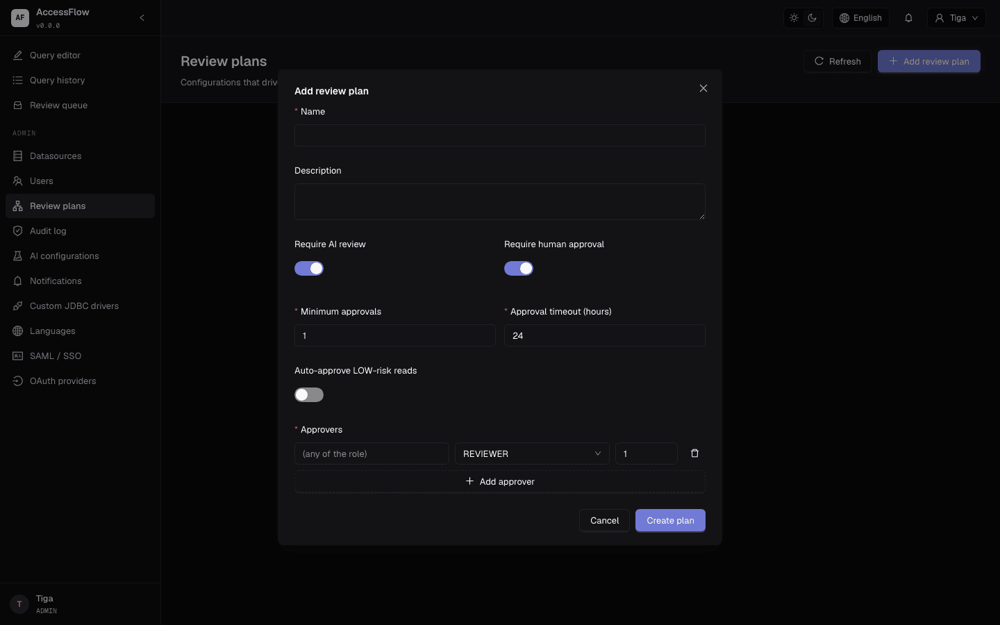
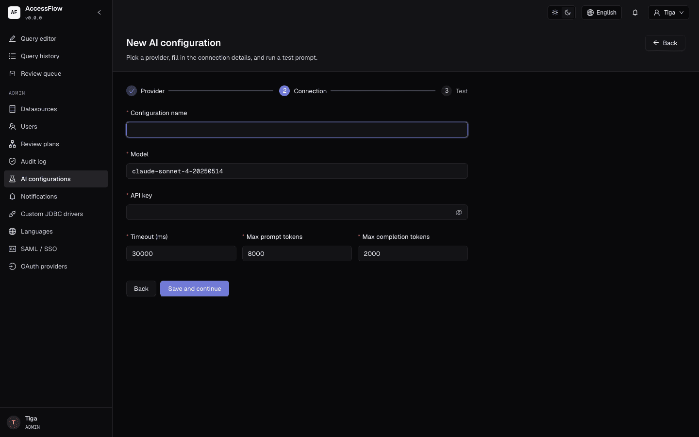
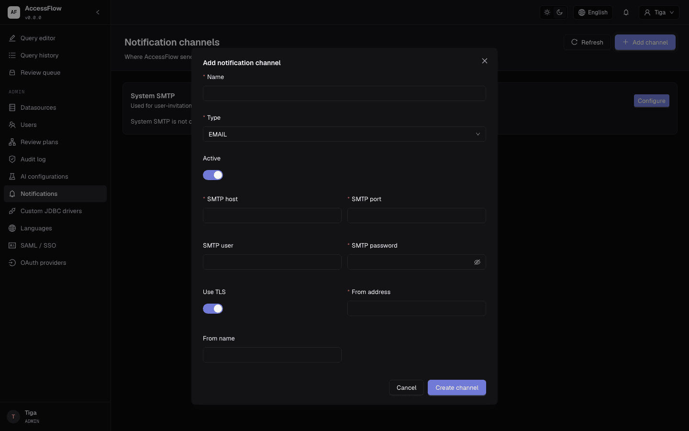
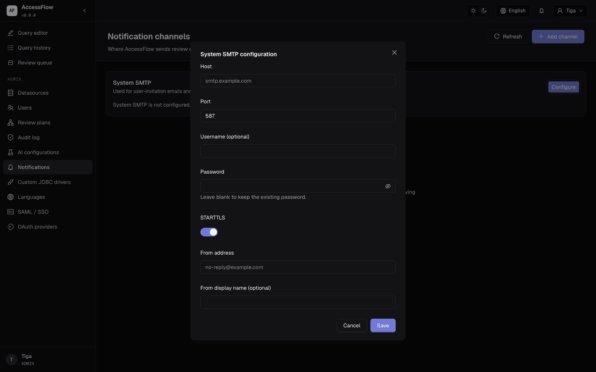
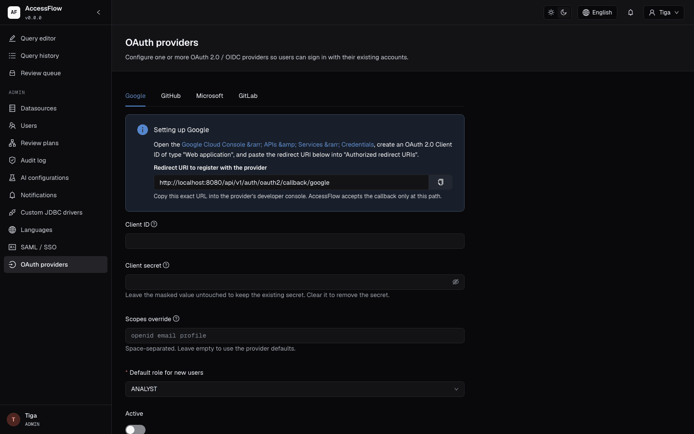
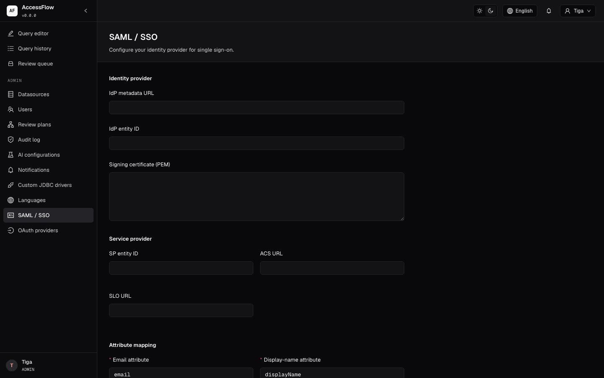

Run and configure AccessFlow.
An operator and admin guide — how to install AccessFlow in different environments, how to start it for the first time, and how to configure every entity that drives the review pipeline: users, roles, datasources, review plans, AI, OAuth, SMTP, and notification channels. Everything here is sourced from the engineering chapters and the project README.
Read this first
AccessFlow is a self-hosted SQL proxy. Your team connects to AccessFlow instead of directly to PostgreSQL, MySQL, MariaDB, Oracle, or Microsoft SQL Server (or any other JDBC-compatible engine, via an admin-uploaded driver). Every statement is parsed, classified, optionally AI-reviewed, and routed through a configurable human-approval workflow before it touches the database. Customer-database credentials never leave the proxy.
This guide is split into three parts: running AccessFlow (pick one of three deployment modes), first-time setup (browser wizard or GitOps env vars), and configuration (every entity an admin manages through the UI or REST API).
Running AccessFlow
Pick one of three modes. Docker Compose is the fastest path to a running instance. Helm is the production-recommended path on Kubernetes. The manual / from-source path is for contributors and for environments where containers aren't available.
Docker Compose
The repo root ships a zero-config demo stack — it pulls the published images from GHCR and starts Postgres + Redis + backend + frontend with insecure demo keys baked in so a fresh clone runs with one command:
git clone https://github.com/bablsoft/accessflow.git cd accessflow docker compose up -d # open http://localhost:5173 — the in-app setup wizard creates the first admin
docker-compose.yml embeds insecure
JWT_PRIVATE_KEY and ENCRYPTION_KEY defaults inline so it
works on a fresh clone. Do not deploy this to anything but a sandbox.
For real environments, use the production-style compose below or the Helm chart.
For a production-style compose, generate real keys and supply them via
.env:
# 32-byte hex — AES-256-GCM for datasource credential encryption ENCRYPTION_KEY=$(openssl rand -hex 32) # RSA-2048 PEM — JWT RS256 signing key JWT_PRIVATE_KEY="$(openssl genpkey -algorithm RSA -pkeyopt rsa_keygen_bits:2048 2>/dev/null)" DB_PASSWORD=change-me CORS_ALLOWED_ORIGIN=https://accessflow.company.com ACCESSFLOW_PUBLIC_BASE_URL=https://accessflow.company.com
See docs/09-deployment.md
→ Docker Compose for the full production-style compose (including the optional
ollama profile for self-hosted AI).
Kubernetes & Helm
The Helm chart ships at charts/accessflow/ and is published to
https://bablsoft.github.io/accessflow. Pre-create the required Secrets
(the chart will refuse to start if they're missing or empty):
# 1. add the chart repo helm repo add accessflow https://bablsoft.github.io/accessflow helm repo update # 2. create namespace + Secrets kubectl create namespace accessflow kubectl -n accessflow create secret generic accessflow-encryption-key \ --from-literal=ENCRYPTION_KEY="$(openssl rand -hex 32)" kubectl -n accessflow create secret generic accessflow-jwt-key \ --from-file=JWT_PRIVATE_KEY=<(openssl genpkey -algorithm RSA -pkeyopt rsa_keygen_bits:2048) kubectl -n accessflow create secret generic accessflow-pg-secret \ --from-literal=DB_PASSWORD="$(openssl rand -base64 24)" # 3. install helm install accessflow accessflow/accessflow -n accessflow -f values.yaml
The chart bundles Bitnami subcharts for Postgres and Redis (toggle off with
postgresql.enabled=false / redis.enabled=false to point at
external instances). Full values reference and the Secret schema:
docs/09-deployment.md
→ Kubernetes & Helm and
charts/accessflow/README.md.
Manual / from source
For contributors and air-gapped builds. Requires JDK 25 and Node.js 24 on the host:
git clone https://github.com/bablsoft/accessflow.git cd accessflow # 1. infrastructure — Postgres 18 + Redis 8 + Mailcrab (dev-only compose) docker compose -f backend/docker-compose-dev.yml up -d # 2. backend cd backend ./mvnw spring-boot:run # 3. frontend (in another shell) cd frontend npm install npm run dev # open http://localhost:5173
For full coding standards, test commands, and the dev loop, see docs/11-development.md.
First-time setup
There are two ways to bring up a brand-new AccessFlow deployment.
Option A — Browser setup wizard
The default. Open the frontend (http://localhost:5173 for the demo
stack, or whatever URL serves the SPA in your environment). When no organization
exists yet, the app routes to /setup and walks you through:
- Create the organization.
- Create the first admin user (email + password).
- Optional: configure system SMTP so invitation emails work.
- Optional: add a first datasource and a default review plan.
After the wizard finishes, log in as the admin and finish configuring the system from the admin pages — see Configuration below.
Option B — Bootstrap via env vars (GitOps)
Set ACCESSFLOW_BOOTSTRAP_ENABLED=true and supply
ACCESSFLOW_BOOTSTRAP_* properties for the organization, admin user,
review plans, AI configs, datasources, SAML, OAuth2, notification channels, and
system SMTP. On every startup the bootstrap module reconciles the declared
configuration into the database — declared rows are upserted, omitted rows are left
alone.
Configuration
Everything below is admin-only. This page walks through each entity in the admin UI; every screen has a REST equivalent in docs/04-api-spec.md if you'd rather automate. Sign in as the admin you created in first run, then use the left-hand Admin sidebar to jump between sections.
Users
Local users are created directly by an admin. Federated users (SAML / OAuth) are auto-provisioned on first sign-in if the feature is enabled (see SAML and OAuth).

/admin/users → Invite via email. Enter the recipient's email, pick a role, and AccessFlow emails a one-time signup link.- Invite via email (default). From
/admin/users, click Invite via email, fill in the recipient's email, optional display name, and role, then submit. AccessFlow generates a signup token and emails it; the link expires afterACCESSFLOW_SECURITY_INVITATION_TTL(default 7 days). - Create with a password. Use the dropdown next to the invite button → Create with password to provision a user directly. Useful when SMTP isn't configured yet, or when you want to seed an account synchronously.
- Edit or deactivate. Click any row to change the role or flip the active toggle. Deactivated users can't sign in but their audit trail is preserved.
- Pending invitations are listed below the user table; resend or revoke them from there.
User roles & RBAC
AccessFlow has four roles. Pick the lowest-privilege role for each user — admins are the only role that can change configuration. A user can never approve their own query, regardless of role.
| Capability | READONLY |
ANALYST |
REVIEWER |
ADMIN |
|---|---|---|---|---|
Submit SELECT queries | ✓ | ✓ | ✓ | ✓ |
Submit DML (INSERT / UPDATE / DELETE) | — | ✓ | ✓ | ✓ |
Submit DDL (CREATE / ALTER / DROP) | — | — | — | ✓ |
| View own query history | ✓ | ✓ | ✓ | ✓ |
| View all queries in the org | — | — | ✓ | ✓ |
| Approve / reject queries | — | — | ✓ | ✓ |
| Manage datasources | — | — | — | ✓ |
| Manage users | — | — | — | ✓ |
| Manage review plans | — | — | — | ✓ |
| View audit log | — | — | — | ✓ |
| Manage notification channels | — | — | — | ✓ |
| Configure AI | — | — | — | ✓ |
| Configure SAML / OAuth | — | — | — | ✓ |
Which role for what. Use READONLY for people who only
need to look at production data (analysts, on-call engineers reading dashboards).
Use ANALYST for people who write data through reviewed queries.
Use REVIEWER for people who approve other users' queries — typically
senior engineers or DBAs. Use ADMIN for the platform-team operators who
configure the system itself.
Datasource-level permissions. Role is the org-wide ceiling. On top of
it, every user needs an explicit row in datasource_user_permissions to
access a given datasource — that row controls can_read /
can_write / can_ddl per datasource, row caps, allowed
schemas / tables, and restricted columns (which are masked as *** in
SELECT results). See
docs/07-security.md
for the full authorization matrix.
Datasources
A datasource describes one customer database that AccessFlow proxies. PostgreSQL, MySQL, MariaDB, Oracle, and MS SQL Server are bundled; any other JDBC engine works by uploading its driver JAR and setting type to Custom.

/datasources/new — four-step wizard: Database type → Connection details → Connection test → Configuration.- Database type. Pick a bundled driver tile (PostgreSQL ships in the JAR; other drivers are pulled from Maven Central on first use against a pinned SHA-256). Pick Custom to use a JDBC driver you uploaded under Admin → Custom JDBC drivers.
- Connection details. Name the datasource, then enter host, port, database name, service-account username, and password. SSL mode defaults to
REQUIRE; switch toVERIFY_FULLin production. The password is AES-256-GCM encrypted on write, decrypted once into the HikariCP pool, and never returned in any GET response. - Connection test. AccessFlow opens a real JDBC connection, runs a heartbeat query, and surfaces any SSL / authentication errors before you save.
- Configuration. Pick the Review plan that gates this datasource, toggle Require review on reads / writes, and (optionally) enable AI analysis + pick an AI configuration. Pool size, max rows, and statement timeout default sensibly but can be tightened per datasource.
Grant a user access. Open the datasource → Permissions tab and add a row per user — can_read / can_write / can_ddl, allowed schemas, allowed tables, and restricted columns (which are masked as *** in SELECT results). Without a permission row, a user cannot see or query the datasource at all.
Custom JDBC drivers. Under Admin → Custom JDBC drivers, click Upload driver, attach the JAR, and supply the vendor name, target database type, fully-qualified driver class, and expected SHA-256. The SHA is re-verified on every pool init and each driver runs in an isolated classloader. The on-disk cache path is ACCESSFLOW_DRIVER_CACHE (default ~/.accessflow/drivers) — mount it as a persistent volume in Kubernetes.
Review plans
A review plan is a per-datasource policy that decides how a submitted query reaches execution. Each plan describes a sequence of stages; each stage names approvers (by role or explicit user) and a minimum number of approvals before the query advances.

/admin/review-plans → Add review plan. Stack approver rows to build multi-stage chains.- Open
/admin/review-plansand click Add review plan. - Name and describe the policy — e.g. "Production writes — two reviewers".
- Pick the gates. Toggle Require AI review to score every query before it queues for humans; toggle Require human approval to demand at least one reviewer sign-off. Auto-approve LOW-risk reads lets
SELECTs skip humans entirely when AI risk is below the threshold. - Set thresholds. Minimum approvals is the number of distinct reviewers needed before the query advances; Approval timeout (hours) is when
QueryTimeoutJobauto-rejects an idlePENDING_REVIEWquery (cadence configurable viaACCESSFLOW_WORKFLOW_TIMEOUT_POLL_INTERVAL, defaultPT5M). - Build the approver chain. Click Add approver for each stage; each row names a role (or a specific user) and a stage number. Stages advance sequentially, and a single REJECTED decision at any stage terminates the query.
Query status transitions. A query moves through these states:
PENDING_AI → PENDING_REVIEW → APPROVED → EXECUTED
↘ REJECTED (manual reviewer rejection)
↘ TIMED_OUT (approval-timeout auto-reject)
PENDING_REVIEW → CANCELLED (submitter only)
APPROVED → FAILED (execution error)
A single REJECTED decision at any stage terminates the query. If a query
sits in PENDING_REVIEW past the plan's approval_timeout_hours,
QueryTimeoutJob auto-rejects it. The job's cadence is configurable via
ACCESSFLOW_WORKFLOW_TIMEOUT_POLL_INTERVAL (default PT5M).
auto_approve_reads=true lets SELECTs skip human approval
entirely; requires_ai_review=true still scores the read but won't block
on a human.
AI configurations
AI analysis is per-organization. AccessFlow ships adapters for three providers — pick one that fits your data-egress policy:
- Anthropic — default model
claude-sonnet-4-20250514. - OpenAI (or any OpenAI-compatible endpoint) — default model
gpt-4o. - Ollama — self-hosted, set Endpoint to the Ollama server URL.

/admin/ai-configs/new — three-step wizard: Provider → Connection → Test.- Provider. Open
/admin/ai-configs, click New configuration, and pick a provider tile (OpenAI / Anthropic / Ollama). The wizard pre-fills the default model for the provider you chose. - Connection. Name the configuration, optionally override the model, and paste the API key (left empty for Ollama; supply an Endpoint URL instead). Tune Timeout, Max prompt tokens, and Max completion tokens if your provider has stricter limits.
- Test. The wizard sends a synthetic SQL snippet to the provider and shows the score, risk level, and any issues so you can confirm the credentials and model are working before you save.
Provider switches take effect immediately — no restart is required. Once saved, link the configuration to a datasource (Datasources → Configuration step) or to a review plan, and AccessFlow scores every matching submission against it.
LOW / MEDIUM / HIGH / CRITICAL),
and a list of issues categorised as anti-patterns, missing indexes, restricted-column
access, etc. The score is informational — only human reviewers can finalize approval
unless the plan opts in to auto_approve_reads.
Notification channels
AccessFlow fires notifications when a query is submitted, approved, rejected, times
out, or scores CRITICAL on AI risk. Channels are configured per
organization; multiple channels of the same type can coexist (e.g. one Slack channel
per team).

/admin/notifications → Add channel. The form swaps its lower half between Email / Slack / Webhook fields when you change Type.- Open
/admin/notificationsand click Add channel. - Pick a type:
- Email — supply SMTP host, port, optional user / password, TLS, and the From address / display name. Leave the SMTP fields blank to fall back on the system SMTP.
- Slack — paste an incoming-webhook URL; messages use Block Kit so the SQL preview and action buttons render natively.
- Webhook — supply a target URL and a signing secret. Every POST carries
X-AccessFlow-Signature: sha256=...computed from the body and the secret.
- Send a test event. After saving, each channel card has a Test button — the dispatcher fires a synthetic event and reports delivery success.
Sensitive config fields (SMTP password, webhook secret) are AES-256-GCM encrypted at rest and are never shown in plaintext after the channel is saved.
+30s, +2 min, +10 min. Tune the
delays via ACCESSFLOW_NOTIFICATIONS_RETRY_FIRST /
_SECOND / _THIRD. Failed deliveries log ERROR
but never affect query workflow state.
System SMTP
System SMTP is the fallback for transactional emails — password resets, invitations, and any notification email channel that doesn't carry its own SMTP overrides. Configure once per org.

/admin/notifications → System SMTP card → Configure.- Open
/admin/notifications. The first card is System SMTP — click Configure (or Edit if it's already set). - Fill the form. Host, port (587 for STARTTLS, 465 for implicit TLS), optional username and password, STARTTLS toggle, and the From address — required and validated as an email. The password field shows "Leave blank to keep the existing password" when editing, so secrets aren't echoed back.
- Send a test email. After saving, the card exposes a sink-address input + Send test button so you can verify deliverability without firing a real workflow event.
The password is AES-256-GCM encrypted at rest. Delete the row from the same card if you'd rather rely solely on per-channel email overrides.
OAuth 2.0 / OIDC
Sign-in with Google, GitHub, Microsoft, and GitLab is built-in — operators only need
to register an OAuth app with the provider and store the client id / secret in
AccessFlow. Other OIDC providers work the same way; the configuration lives in the
database, not in application.yml, so adding a new provider does not
require a restart.

/admin/oauth2 — one tab per built-in provider (Google / GitHub / Microsoft / GitLab). Each tab carries its own redirect URI and provider-specific guidance.- Register an OAuth app at the provider using the redirect URI shown in the AccessFlow tab (copy it directly from the info callout). The format is
{ACCESSFLOW_PUBLIC_BASE_URL}/api/v1/auth/oauth2/callback/{provider}. - Open
/admin/oauth2, pick the provider tab, and paste the Client ID and Client secret. Microsoft additionally needs a Tenant ID; other providers expose optional Scopes override for custom claims. - Pick a default role for first-time sign-ins (defaults to
READONLY) and flip Active on to enable the provider's button on the login page. - Set
ACCESSFLOW_OAUTH2_FRONTEND_CALLBACK_URLif the frontend lives at a different origin than the backend's CORS origin (default{CORS_ALLOWED_ORIGIN}/auth/oauth/callback).
Email verification is required before an OAuth account is linked, and account-linking is conservative — a provider-supplied email will not silently take over an existing local user. Implementation details: docs/07-security.md → Authentication.
SAML 2.0 SSO
For SAML-based SSO (Okta, Azure AD, OneLogin, etc.) configure one record per organization. Both SP-initiated and IdP-initiated flows are supported.

/admin/saml — a single config form covering IdP metadata, SP entity, and attribute mapping.- Open
/admin/saml. - Identity provider. Paste the IdP metadata URL (preferred — AccessFlow refreshes it periodically), or fall back to IdP entity ID + Signing certificate (PEM) when the IdP doesn't publish metadata over HTTP.
- Service provider. Set SP entity ID, ACS URL, and SLO URL — register these with your IdP.
- Attributes. Map the IdP assertion attributes that carry email, display name, and role. Pick a default role for users whose assertion doesn't include one, then flip Active on to enable the SAML button on the login page.
SAML users rely on the IdP's MFA rather than AccessFlow's TOTP. Full SP metadata, signing-cert rotation, and assertion validation rules live in docs/07-security.md.
Further reading
This page covers what an operator needs to run and configure AccessFlow. For deeper internals — module boundaries, the proxy engine, the audit log's HMAC chain, the full REST + WebSocket spec — see the engineering chapters in the docs/ folder on GitHub:
- 02 · Architecture — subsystems, technology stack, request flow.
- 04 · REST API — every endpoint, request body, and WebSocket event.
- 05 · Backend — proxy engine, workflow state machine, AI analyzer internals.
- 07 · Security — auth, authorization matrix, encryption, audit integrity.
- 08 · Notifications — event types, channel configs, signed webhook payloads.
- 09 · Deployment — full env-var reference, Helm values, Bootstrap GitOps tree.